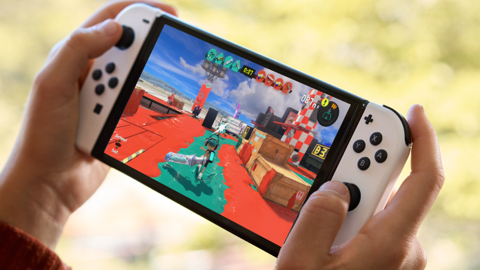
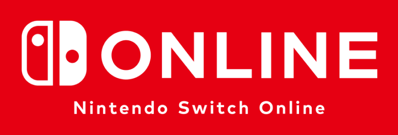
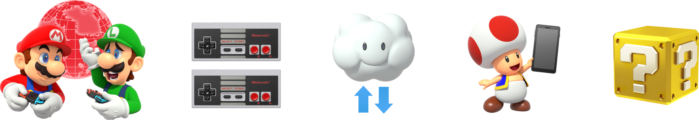
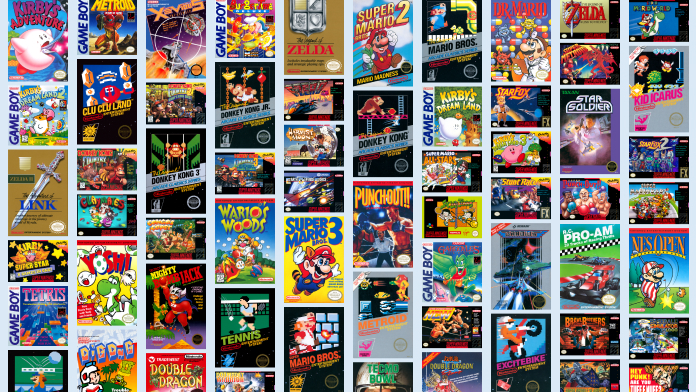
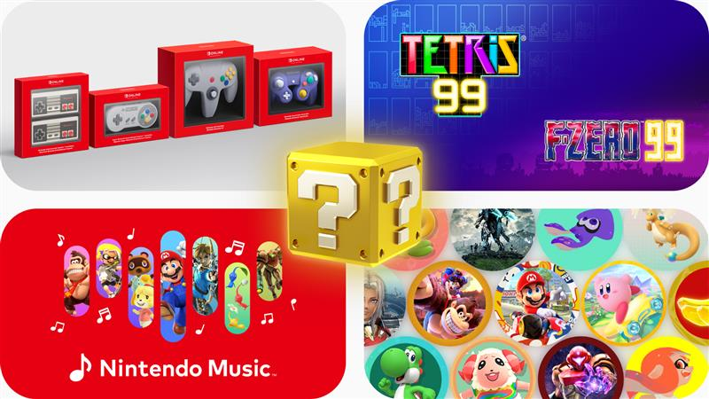
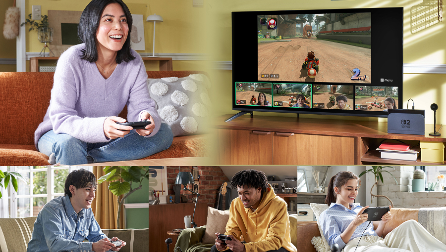
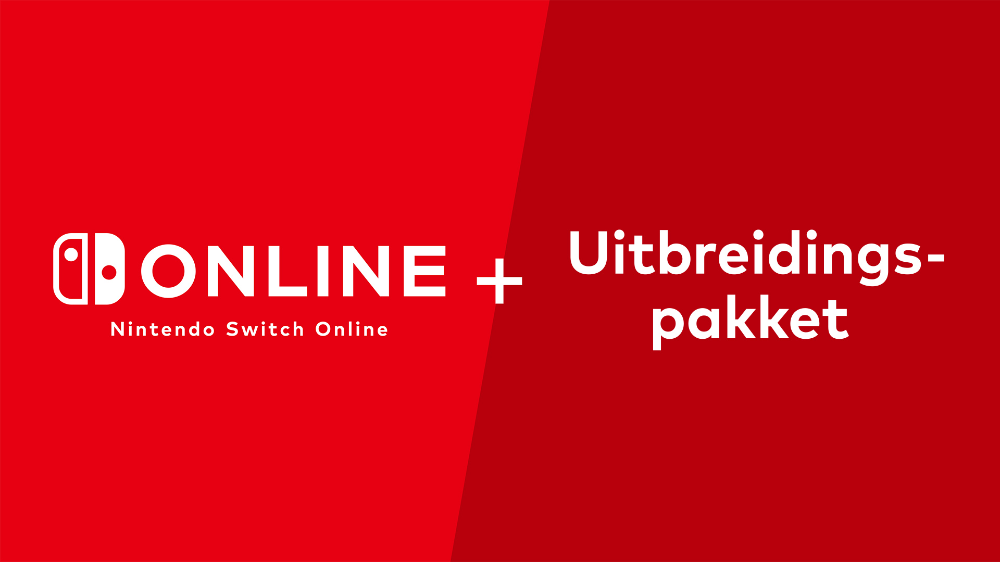
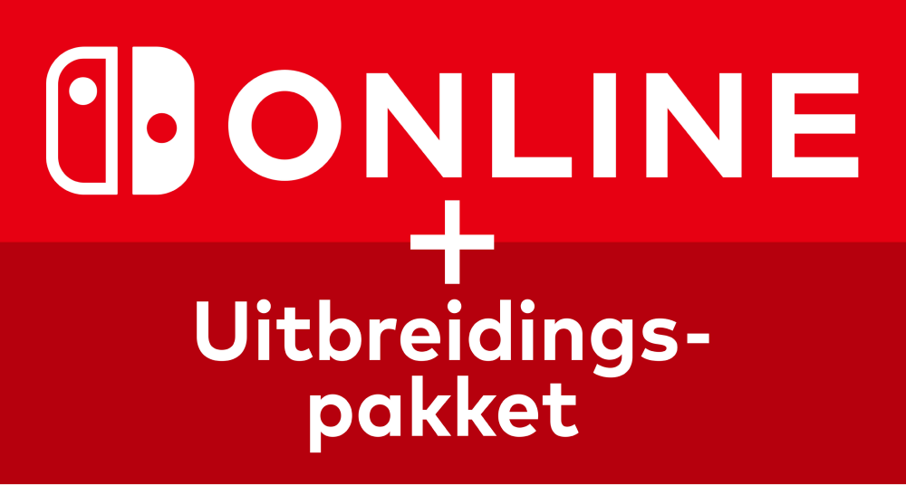
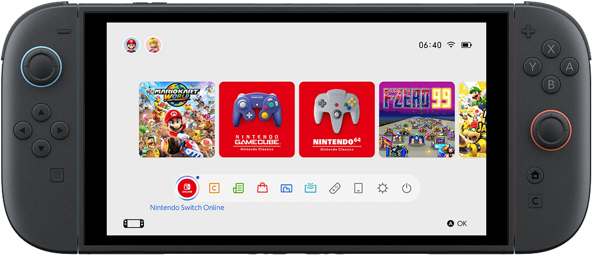

Online spelen
Neem het online op tegen rivalen of speel met vrienden in talloze ondersteunde Nintendo Switch 2 en Nintendo Switch-games, waaronder Mario Kart World, Super Mario Party Jamboree, Splatoon 3, en nog vele meer.

Haal nog meer uit je Nintendo Switch 2 en Nintendo Switch met online spelen, klassieke games, exclusieve voordelen en meer – allemaal beschikbaar met een Nintendo Switch Online-lidmaatschap!

Per Nintendo-account is er één gratis proefperiode beschikbaar. Het is tijdens de proefperiode niet mogelijk om Nintendo Switch-gamevouchers of klassieke controllers te kopen.

Neem het online op tegen rivalen of speel met vrienden in talloze ondersteunde Nintendo Switch 2 en Nintendo Switch-games, waaronder Mario Kart World, Super Mario Party Jamboree, Splatoon 3, en nog vele meer.

Krijg toegang tot een groeiende collectie van meer dan 190 NES-, Super NES- en Game Boy-games, waaronder Super Mario Bros. 3, Super Mario World en Tetris®. Je kunt in ondersteunde games zelfs met of tegen vrienden spelen via een online of lokale verbinding!

Profiteer van een reeks voordelen, zoals de Nintendo Music-app voor smartapparaten, Games Op Proef, exclusieve games, Nintendo Switch-gamevouchers en fysieke producten die alleen te koop zijn voor leden van Nintendo Switch Online.

Chat met vrienden, deel je scherm direct en zie elkaar tijdens het spelen door een compatibele USB-C-camera (apart verkrijgbaar) aan te sluiten! GameChat is exclusief voor de Nintendo Switch 2.
Je moet een mobieletelefoonnummer registreren om GameChat te gebruiken. Voor het gebruik van GameChat dienen kinderen van een ouder of voogd toestemming te krijgen via de app 'Ouderlijk toezicht voor Nintendo Switch'. Sommige onlinediensten zijn mogelijk niet in alle landen beschikbaar.

Met een lidmaatschap van Nintendo Switch Online + Uitbreidingspakket krijg je toegang tot alle voordelen die het standaard Nintendo Switch Online-lidmaatschap biedt, plus een groeiende collectie van klassieke Nintendo 64-, Game Boy Advance-, Virtual Boy- en SEGA Mega Drive-games, en toegang tot downloadbare content voor bepaalde Nintendo Switch-games. Spelers op de Nintendo Switch 2 krijgen ook toegang tot een groeiende collectie klassieke Nintendo GameCube-games, naast een selectie van upgradepacks voor Nintendo Switch 2 Editions!
Meer infoOntdek hieronder wat elk lidmaatschap te bieden heeft om te bepalen welk lidmaatschap het beste bij je past.

Als je al een Nintendo Switch Online-lidmaatschap hebt, krijg je korting op je nieuwe lidmaatschap.
Bekijk de korting hier!
De Nintendo Switch Online-applicatie is beschikbaar vanuit het HOME-menu op je Nintendo Switch 2 of Nintendo Switch, waarmee je onlinediensten, het laatste nieuws en je huidige lidmaatschapsstatus kunt bekijken. Ook kun je naar MISSIES EN BELONINGEN gaan, waar je platina punten kunt verdienen om in te ruilen voor My Nintendo-beloningen of profielafbeeldingsstukjes!
Dit zijn enkele veelgestelde vragen (en antwoorden!) over Nintendo Switch Online en Nintendo Switch Online + Uitbreidingspakket.